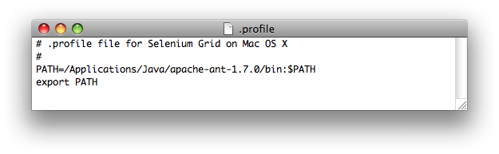
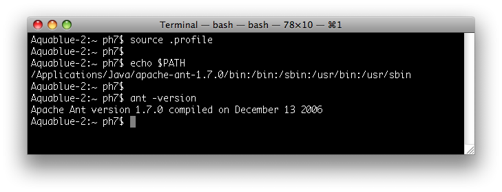
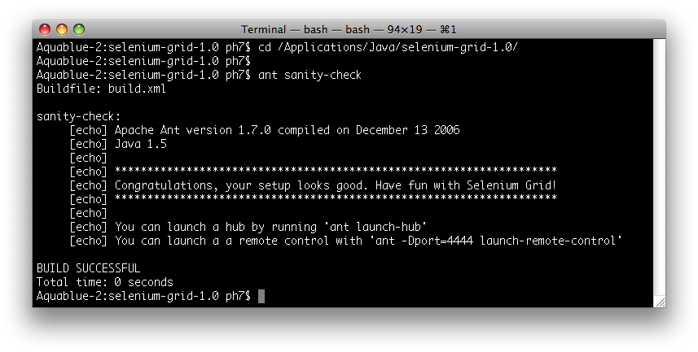

Here are detailed, step by step instructions, on how to install Selenium Grid on an OS X machine from Apple.
The appropriate JDK is shipped by default on any Mac 10.X installation,
and should be available out-of-the-box.
You can double-check this by openning a terminal window and
running java -version
The command output should indicate that a 1.5 version of the JDK is available. If not, insert Apple OS X install CD in your machine and re-install the developer tools.
Check that you have the right Ant version (1.7) by running in a terminal:
ant -version
Most likely you are all set if you are running OS X 10.5 (Leopard): Ant 1.7 is provided as part of the default install. You can skip the next section and go directly to step 3!
If you are running an earlier version of Mac OS X, and have a 1.6 version of Ant (or earlier), install Ant 1.7 as explained in step 2a.
/Applications/Java/apache-ant-1.7.1:

You then need to modify your PATH so that your
system picks up the right Ant launcher. Just go to a Terminal window and:
cd
and then the ENTER key), and open the
.profile file.

.profile file so that the freshly installed
Ant version 1.7 is first in your path:

.profile file (Menu "File"->"Save")
.profile to the current terminal. Then
verify that your PATH is set accordingly and that you
pick up the right Ant version:

/Applications/Java).
We will refer to the directory where Selenium Grid is installed as
"Selenium Grid Home". For instance if you unzipped the distribution
within /Applications/Java, your Selenium Grid Home is
/Applications/Java/selenium-grid-1.0.

Verify the Selenium Grid install: from the terminal window
go to the Selenium Grid home directory and run:
ant sanity-check

If the build is successful, you are all set!